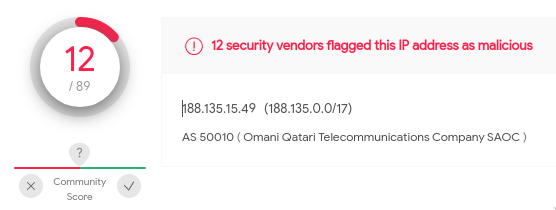
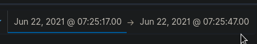

The second case of the CyberCorp challenge on CyberDefenders.org is all about threat hunting. Created by @BlackMatter23 and his team, this challenge is based on a real-world attack so it is perfect for gaining practical experience in threat hunting.
This writeup is part one out of multiple parts as I will be detailing my thought process and the steps I took for each question.
Edit: Part 2 and Part 3 is now out.
Understanding WMI Persistence
Question 1. The Threat Hunting process usually starts with the analyst making a hypothesis about a possible compromise vector or techniques used by an attacker. In this scenario, your initial hypothesis is as follows: "The attacker used the WMI subscription mechanism to obtain persistence within the infrastructure". Verify this hypothesis and find the name of the WMI Event Consumer used by the attacker to maintain his foothold.
So the question tells us that the attacker used WMI subscription to gain persistence in our network.
The very first thing I did was to check the Mitre ATT&CK wiki for information about this attack. My search led me to the "Event Triggered Execution: Windows Management Instrumentation Event Subscription" with technique ID T1546.003. And, of course, I fired up my vATT&CK tool to better visualize the technique and its related information.

Testing WMI Persistence in my homelab
Now that I understand the concept I then checked the technique's entry in the Atomic Red Team's repository of adversary emulation techniques. The nice thing about Atomic Red Team is that they have easy-to-follow step-by-step instructions on how to emulate Mitre ATT&CK techniques.
I took the code on the page and ran it in my homelab. I then fired up Windows Event Viewer and looked for entries with event log ID "5681 (WMI activity)". The entry that I found contains the information below:
Namespace = //./root/subscription; Eventfilter = AtomicRedTeam-WMIPersistence-Example (refer to its activate eventid:5859); Consumer = CommandLineEventConsumer="AtomicRedTeam-WMIPersistence-Example"; PossibleCause = Binding EventFilter:
instance of __EventFilter
{
CreatorSID = {1, 5, 0, 0, 0, 0, 0, 5, 21, 0, 0, 0, 96, 158, 195, 131, 63, 242, 87, 184, 137, 245, 68, 134, 233, 3, 0, 0};
EventNamespace = "root\\CimV2";
Name = "AtomicRedTeam-WMIPersistence-Example";
Query = "SELECT * FROM __InstanceModificationEvent WITHIN 60 WHERE TargetInstance ISA 'Win32_PerfFormattedData_PerfOS_System' AND TargetInstance.SystemUpTime >= 240 AND TargetInstance.SystemUpTime < 325";
QueryLanguage = "WQL";
};
Perm. Consumer:
instance of CommandLineEventConsumer
{
CommandLineTemplate = "C:\\Windows\\System32\\notepad.exe";
CreatorSID = {1, 5, 0, 0, 0, 0, 0, 5, 21, 0, 0, 0, 96, 158, 195, 131, 63, 242, 87, 184, 137, 245, 68, 134, 233, 3, 0, 0};
Name = "AtomicRedTeam-WMIPersistence-Example";
};
Since I have Sysmon logging enabled, I also double-checked the logs using the Sysmon event IDs below:
- Event ID 19: WmiEvent (WmiEventFilter activity detected)
- Event ID 20: WmiEvent (WmiEventConsumer activity detected)
- Event ID 21: WmiEvent (WmiEventConsumerToFilter activity

As we can see, Sysmon separates the WMIEvents into the different types of WmiEvent activities.
Building the Query for the Kibana search
Now that I know what the important IOCs are, I could now create the query to answer the first question of the challenge.
- 5861
- ("QueryLanguage = " AND "Consumer = ")
When the above information is combined, I get the query 5861 OR ("QueryLanguage = " AND "Consumer = "). Putting this in the Kibana search shows us the one and only entry:

From there we could easily see the name of the WMI Event Consumer.
Looking for the WMI subscriber
Question 2. In the previous step, you looked for traces of the attacker's persistence in the compromised system through a WMI subscription mechanism. Now find the process that installed the WMI subscription. Answer the question by specifying the PID of that process and the name of its executable file, separated by a comma without spaces.
Reading the question above, I knew that I needed to look for a process that has happened prior to the WMI subscription. And so, I've set the date range to reflect this.

I wasn't so sure what to look for next so I just looked out for anything suspicious. Thankfully there is the enrich.ioa.* set of fields where enrichment is done that indicate suspiciousness. I've set a filter to show entries that have enrich.ioa.max_severity to exists. This means it'll only show events that are either high, medium, or low.
These showed some very interesting events:

It seems like winword.exe is connecting to an external IP. Very suspicious. Searching the IP 188.135.15.49 on VirusTotal reveals that it is indeed malicious.

If we look at more of the events we will find that there are a lot of malicious activity with the proc_cmdline that contains the value:
"C:\Program Files (x86)\Microsoft Office\Office16\WINWORD.EXE" /n "C:!Work\Marketing\Docs\OPEC\OPEC crude oil production.docx" /o ""
Having seen all of that we can now safely assume that this is the process that we are looking for. Entering the proc_id along with the proc's file name satisfies question number 2.
Looking for the extracted archive
Question 3. The process described in the previous question was used to open a file extracted from the archive that the user received by email. Specify a SHA256 hash of the file extracted and opened from the archive.
The question said something about a file being opened, and so I added the filters event_type: FileOpen and proc_file_path: C:\Program Files (x86)\Microsoft Office\Office16\WINWORD.EXE to see what files were opened using Word.exe prior to the WMI subscription. This however showed a lot of files.

The question also mentioned that the opened file was extracted from an archive received by email. So I added the query *zip* OR *rar* to find out if there are any "zip" or "rar" files that were processed.
Sure enough, there was, and one particular really stood out.
Process 'c:\program files (x86)\microsoft office\office16\outlook.exe' created file 'c:\users\john.goldberg\appdata\local\microsoft\windows\inetcache\content.outlook\dfn3sfep\report.zip'
This tells us that the archive report.zip was opened via email using the program outlook.exe.
But what was the generated file when the archive was opened? Looking through the results we could also see one entry that had the enrich.chain with the value of:
'c:\windows\explorer.exe' ➔ 'c:\program files (x86)\microsoft office\office16\winword.exe' ➔ 'c:\users\john.goldberg\appdata\local\temp\temp1_report.zip\market forecast emea.docx'`.
"Market forecaste emea.docx" was opened via "winword.exe" and we could also see that the temporary folder for it is temp1_report.zip. Entering the hash for this "docx" file was the correct answer for this question.
Finding the actual malicious file
Question 4. The file mentioned in question 3, is not malicious in and of itself, but when it is opened, another file is downloaded from the Internet that already contains the malicious code. Answer the question by specifying the address, from which this file was downloaded, and the SHA256 hash of the downloaded file, separated by commas without spaces.
If we think about it, we can make the date range smaller by starting our range from when the Zip is extracted and from when the WMI subscription happened.

There are three "action" keywords specified in the question that I knew I could filter for. This led me to use the query below:
event_type:NetworkConnection OR event_type:FileOpen OR event_type:FileCreate
What I'm looking for is an event where there is a "NetworkConnection" and a "FileCreate" event (these two signify another file is downloaded from the internet), the "FileOpen" is when the file has been opened and therefore triggered the WMI subscription.
As you can see in the image below, we have a series of events that shows us the three events that we are looking for in the previous paragraph. But because their timestamps are the same, they are all jumbled.

The way to see if the events happened in the order that we want (Network Connection > FileCreate > FileOpen), then what we can do is to view the surrounding documents on one of the events and see from there. From the image below, we see that the ordering of the events is indeed correct.

The above tells us two of the answers that we need to answer the 4th question. The IP on the network connection and the hash of the file that was opened.
Finding the tricky technique
Question 5. The malicious code from the file, mentioned in question 4, directly installed a WMI subscription, which we started our hunting with, and also downloaded several files from the Internet to the compromised host. For file downloading, the attacker used a tricky technique that gave him the opportunity to hide the real process, which initiated the corresponding network activity. Specify the SHA256 hash of the operating system component whose functionality was used by the attacker to download files from the Internet.
So the event that the question is looking for happened after the WMI subscription. I've updated the date range to reflect this.

Initially, I tried doing the same approach as I did before where I would pick up certain "action" keywords from the question. Something similar to the query below:
(event_type:NetworkConnection OR event_type:FileCreate) AND enrich.ioa.max_severity:*
Sadly, no matter where I looked it doesn't seem to be what the question is looking for.
And so, I had to start my search from scratch but this time only focusing on any entries after the WMI subscription that have an existing value in enrich.ioa.max_severity. This approach worked and it showed me this very interesting entry marked as win_unusual_ie_com_dll_host_process.

So apparently, "winword.exe" loaded the library "iexproxy.dll", which allowed it to use "iexplore.exe" in downloading several files from the internet. This technique is unfamiliar to me and researching about it only showed an article from Cyber Polygon. I'll try to explore this in the future, but at least for now. I have the answer to the question.
This is part 1 of my write-up for this challenge. Expect the next part which would have the answer to the question that a lot of people have difficulty answering, which is #9. Until then!